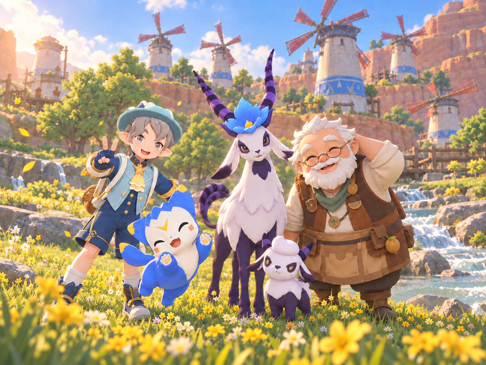
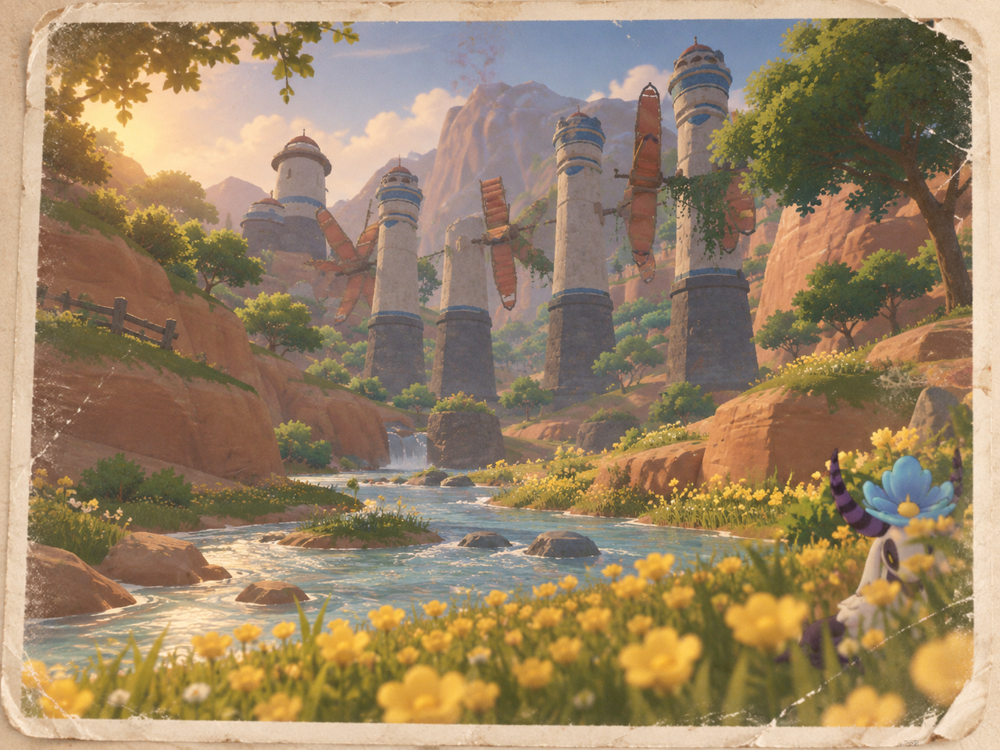

选一位夏日伙伴
从已有精灵中选择一只，带着它一起开始调查。

让培养亲密度的过程多一些同行的乐趣。用每周的生态调查和居民委托，把探索、伙伴互动与摄影串在一起，让玩家在完成一段小故事的同时，留下和精灵共同度过的夏天。
从选定伙伴，到把旅途收进纪念册。
从已有精灵中选择一只，带着它一起开始调查。
循着学院的线索，观察生态、探索场景，与伙伴协作。
在居民的委托里，认识一片风景背后的故事。
照片和共同经历收进夏日纪念册，见证伙伴关系的成长。
夏日愿望委托 ·《心中的花影》
「帮我看看，风车后面的花还开不开。」
噜噜：这张好像是波比爷爷的愿望。他说只是随手贴的，可今天已经来看了六次啦。
节选自任务剧本 · 场景一

界面原型 · 保留原始设计，展示入口、任务与纪念册之间的关系。


这份方案重点考虑的三个问题。
用区域变化和故事线索给探索一个目的，让日常采集、摄影与调查顺路完成，减少重复跑图的疲劳。
把观察、场景互动和协作放进任务推进过程，让精灵参与解题，而不只是跟在玩家身后。
除亲密度成长外，还用合影、纪念册和展示型奖励，为已经满亲密的老搭档保留参与理由。
从整体规则，到每一句对白。
活动方案、任务剧本与界面原型的讲解节选。